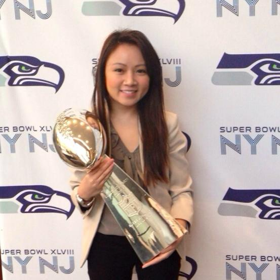
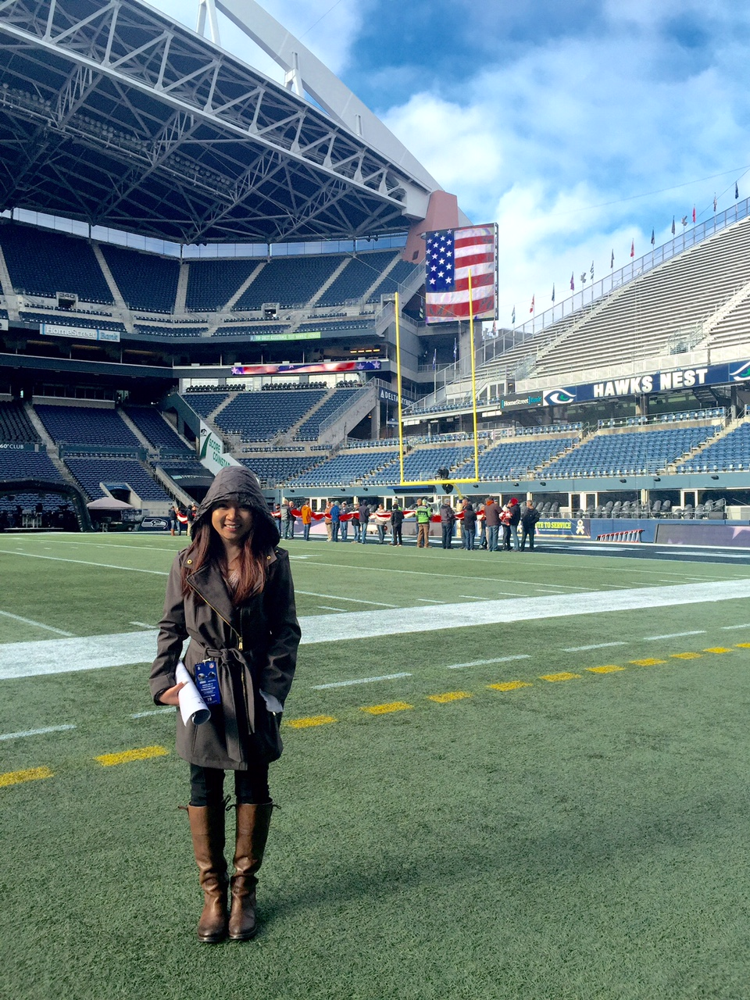

A quick intro:
Hello world! I am a 24 year old web developer student living in Seattle, WA. I graduated from the University of Washington in 2013, with a degree in communications and political science. After graduation, similar to many graduates, I struggled to find my passion. The fall of 2013, I landed my first full-time job, working at Comcast Communications as a sales account representative. The job was great for the first month, then it went downhill as I was doing the same thing over and over, every single day. After the 8th month, I knew I had enough of the job, and left to continue my work with the Seattle Seahawks. A little background on how that started -through the end of high school and early college, I worked for YouthForce, a non-profit through the Boys and Girls Club. At YouthForce, I had the opportunity to work all Sounders and Seahawks home games, assisting from VIP sidelines tours to helping out in the hospitality suites. From there, I networked my way to the organization and started to work for their promotions and events team in 2011. From 2011-present, I've had the experience of my life, working for the NFL. Anywhere from going on tour to the SuperBowl, it was an experience I will never forget.
Still struggling to find my passion, I decided to work for the University of Washington, where I knew professional development was one of their top goals. I work for the University as their E-marketing and event coordinator. The emails I create is marketed towards our Alumni audience in regions outside of Washington state. 
Now, I will admit, that working a full-time job, a part-time job, and learning how to code has been extremely difficult. Coding is not like reading a book and answering questions. My homework is not as intuitive as many would think. So outside of work and school, I enjoy concerts, eating at new restaurants, shopping and watching ItsJudyLife. I'm also very excited for the new season of the Bachelor.
<<<<<<< HEAD =======HI GUYS!
Just trying to fill more content in this areaa. I'm trying to figure out how to put a space between the two photo. I tried using the br tag, but it didn't work. Now I'm thinking that I'll need to put padding in CSS. Yes, lets try that. I'm trying to finish my homework by tonight so that I can relax the next couple of days. Ready set go!
>>>>>>> master